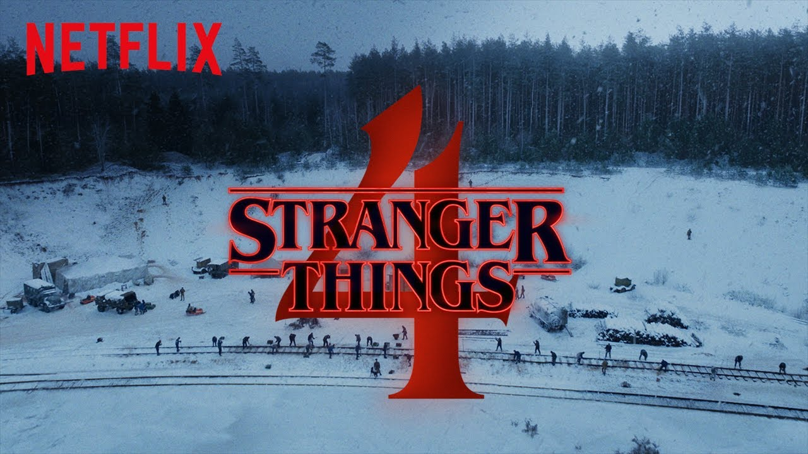

Últimas noticias
Se estrena la nueva serie stranger things
Stranger Things es una serie de televisión web estadounidense de suspenso y ciencia ficción coproducida y distribuida por Netflix!
El protagonista más jóven
El jóven actor rompio récords al ser uno de los protagonistas más jóven de una de las series más famososas de Netflix en el año 2019. Ingresa y enterate!
CUARTA TEMPORADA
Toda una incógnita a día hoy. Sobre el papel, la cuarta temporada de 'Stranger Things' se perfilaba para ocupar el hueco dejado en la parrilla navideña de 2020 por parte de 'You', cuya tercera temporada no llegará hasta 2021, pero el coronavirus ha impactado de lleno a la serie.